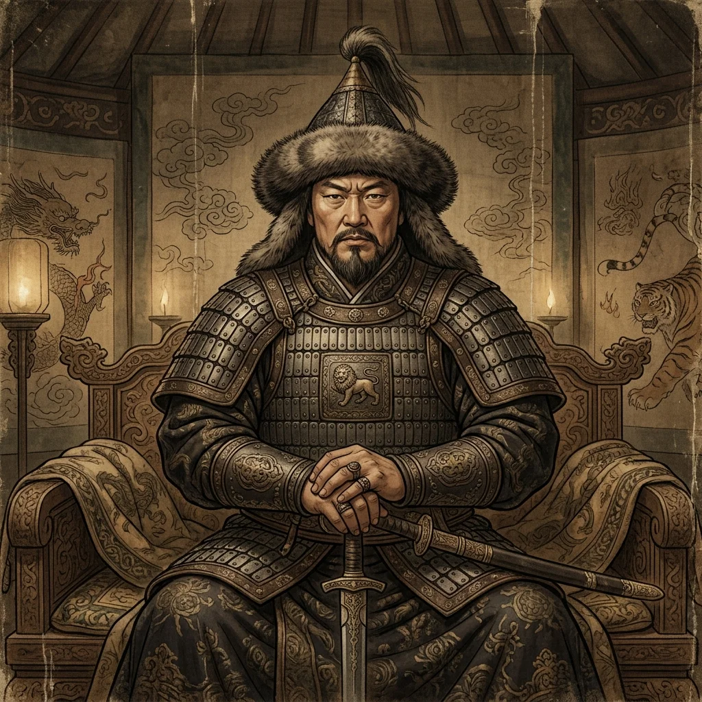
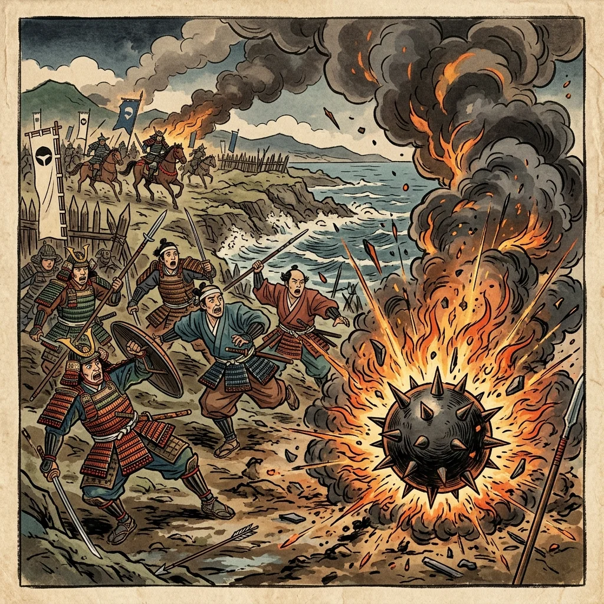

11. 蒙古襲来と鎌倉幕府の衰退
13世紀の後半、日本に未曽有の危機が訪れました。ユーラシア大陸を征服した超大帝国「モンゴル帝国」が、日本へ攻めてきたのです。今回は、この「元寇（げんこう）」と呼ばれる戦いの全貌と、それが原因となって鎌倉幕府が滅亡へと追い込まれていったプロセスを詳しく追っていきます！
1. モンゴル帝国の拡大とフビライ・ハンの要求
13世紀初め、アジアのモンゴル高原にチンギス・ハンが現れ、強力な騎馬軍団を率いてユーラシア大陸にまたがる大帝国を築きました。その孫である第5代皇帝のフビライ・ハン（クビライ）は、中国を支配して国号を「元（げん）」とし、高麗（朝鮮半島）などを従えました。
元は日本に対しても「服従しなさい」と手紙を送り交渉を求めましたが、当時の鎌倉幕府の第8代執権である北条時宗（ほうじょうときむね）は、この要求を拒否し、戦いに備えて九州の警備を強化しました。

図1：日本に服従を要求した元の初代皇帝「フビライ・ハン」のイメージ
2. 元寇（げんこう）〜二度にわたる襲来
服従を拒否された元は、高麗の軍勢を合わせた大軍で二度にわたり九州北部に攻めてきました。この元の襲来をまとめて元寇（げんこう）と呼びます。
① 文永の役（1274年）
1274年、元軍は博多湾（福岡県）に上陸しました。日本の御家人たちは一対一の「やあやあ、我こそは…」という名乗りを上げる戦い方に慣れていましたが、元軍は太鼓の合図で一斉に動く集団戦法をとり、火薬を用いた新兵器のてつはう（鉄砲）を投げ込んできたため、御家人たちは大苦戦しました。しかし、夜間の激しい暴風雨などによって元軍は引き揚げました。

図2：元軍の集団戦法と、破裂して大きな音と光を放つ兵器「てつはう」に苦しむ御家人のイメージ
② 弘安の役（1281年）
最初の襲来の後、幕府は次の襲来に備えて、博多湾の沿岸に石でできた高さ約2メートルの防塁（ぼうるい／石築地）を延々と築き上げました。これにより元の馬や兵が陸に上がれなくなりました。
1281年、元軍は前回をはるかに上回る大軍で再度押し寄せましたが、防塁に阻まれて上陸に手間取っている間に、再び大型の台風（暴風雨）に襲われ、元の船団は壊滅。元軍は撤退を余儀なくされました。
※この戦いの様子は、肥後の御家人・竹崎季長（たけざきすえなが）が自らの活躍をアピールするために描かせた『蒙古襲来絵詞（もうこしゅうらいえことば）』に詳しく残されています。
3. 恩賞不足による御家人の困窮と徳政令
元軍を退け、国を守り抜いた幕府と御家人たちでしたが、戦いの後には深刻な問題が生じていました。
これまでの戦いは「敵の土地を奪って自分のものにする」ものだったため、将軍は奪った土地を御家人に恩賞（新しい土地）として与えることができました。しかし、今回は「外国からの防衛戦」だったため、新しく手に入れた土地がありませんでした。また、防備のための莫大な出費はすべて御家人たちの自己負担でした。
命がけで戦ったにもかかわらず、恩賞がもらえなかった御家人たちは、武具の購入費などの借金で生活が苦しくなりました。
① 徳政令（とくせいれい）の発令（1297年）
困窮する御家人たちを救うため、幕府は1297年に徳政令（とくせいれい／永仁の徳政令）を出しました。これは、御家人が借金の担保として手放した土地を、タダで御家人のもとに戻し、借金を帳消しにするという法律です。
しかし、この結果、お金を貸す商人（借上など）が「また徳政令を出されたら困る」と考えて、御家人にお金を一切貸さなくなってしまいました。御家人たちはさらに生活が苦しくなり、幕府に対する怒りや不満が頂点に達しました。
徳政令の失敗の構図
借金が帳消しになる ➔ 御家人は一時的に助かる ➔ 商人が大損する ➔ 商人は二度と御家人にお金を貸さなくなる ➔ 御家人がさらに生活できなくなる（逆効果！）
4. 鎌倉幕府の滅亡（1333年）
御家人たちの心が幕府から離れ、北条氏の一族が政治を独占する状況への不満が最高潮に達する中、朝廷の政治を取り戻そうとする後醍醐天皇（ごだいごてんのう）が、幕府を倒すよう全国の武士に呼びかけました。
これに応じ、幕府側の有力な御家人であった足利尊氏（あしかがたかうじ）が朝廷側に寝返り、京都の幕府機関である六波羅探題を攻め落としました。また、東国では新田義貞（にったよしさだ）が鎌倉へ攻め込み、1333年に鎌倉幕府はついに滅亡しました。
🔥 この単元のテスト対策・暗記のコツ
-
★
元軍の戦法と対抗：
・日本側：一騎打ち（名乗りを上げる）、弓矢が主流。
・元軍側：集団戦法（集団で囲む）、新兵器てつはう（破裂する火薬兵器）。
・これに対抗するために日本が作ったのは、博多湾沿いの防塁（石造りの壁）です。 -
★
記述問題の定番「なぜ徳政令で御家人がさらに苦しくなったのか？」：
・解答のポイント：「商人が御家人にお金を貸さなくなったため」と書けるようにしておきましょう。 -
★
幕府滅亡の年号と人物：
・1333年（「いざみみみな（1333）みへ鎌倉滅亡」）に滅亡。
・滅亡させた人物：足利尊氏（京都・六波羅探題を攻める）と新田義貞（鎌倉を攻める）。